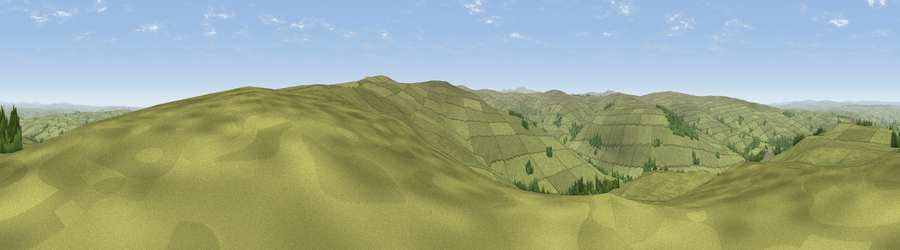

Viewpoint near Allendale
#6687 in England · top 13% of its area beats it · near AllendaleWhere it is
The exact computed spot (NY 79750 54238). Click the marker for map links.
The view, rendered

A 360° render of this exact spot computed from the terrain model, tree cover and land cover — summer colours, afternoon light, calibrated against photographs of famous viewpoints. Real trees, hedges and buildings will differ in detail.
The panorama
Grey silhouette: terrain skyline in each direction (720 bearings, Earth curvature and refraction included). Dashed green: skyline with trees (+15 m) and buildings (+8 m) as obstacles. Blue strip: how far the ground is visible on each bearing.
Where the view opens
Wedge length = distance to the farthest visible ground on that bearing (vegetation-aware). Rings at 10, 25 and 50 km.
What fills the view
96% grassland · 3% woodland
Angular shares of the visible panorama (visual magnitude), not map area. Landscape diversity 0.07 (0–1 Shannon).
Key numbers
More beautiful places nearby
The staircase of upgrades: each row has a higher view potential than everything closer. Driving times are estimates from straight-line distance, calibrated against real road routing — check an actual route before setting out.
| Place | Direction | Drive | Score |
|---|---|---|---|
| Viewpoint near Allendale | SSE · 2 km | ~6 min | 70.0 |
| Viewpoint near Allenheads | SSE · 10 km | ~19 min | 74.6 |
| Grey Nag | WSW · 15 km | ~27 min | 75.7 |
| Viewpoint near Renwick | SW · 18 km | ~31 min | 77.0 |
| Viewpoint near Cumrew | WSW · 22 km | ~36 min | 77.2 |
| Viewpoint near Melmerby | SW · 22 km | ~36 min | 78.1 |
| Cross Fell | SSW · 23 km | ~38 min | 78.7 |
| Viewpoint near Cumrew | W · 24 km | ~39 min | 78.8 |
54.88248, -2.31716 · source: screening · position refined by local search. Computed location — check access rights before visiting.